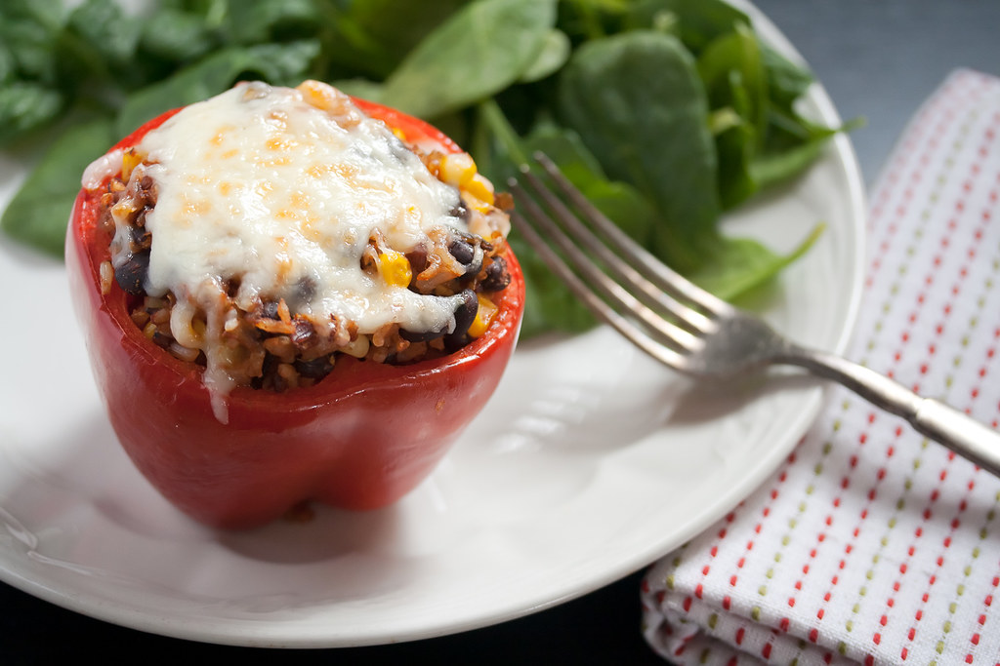

Buffalo Chicken Stuffed Peppers
Prep time: 15 minutes
Cook time: 30 minutes
Total time: 45 minutes
Delicious weeknight meal
You need just five ingredients to bring this meal to life: Shredded rotisserie chicken (or leftover if you made roast chicken yourself), bell peppers of any color you like, crumbled blue cheese (I love Maytag), plain Greek yogurt, and Buffalo sauce.
This stuffed pepper recipe serves two to four people, depending on your appetite. To round out the meal and really drive home the Buffalo wing vibes, I often add a side of carrot and celery sticks.
[Source]
Ingredients
- 1 ½ cups shredded rotisserie chicken
- ⅓ cup plain Greek yogurt
- ⅓ cup Buffalo sauce
- 2 bell peppers, halved, stems and seeds removed
- ⅓ cup crumbled blue cheese
- Optional: Carrot and celery sticks
Directions
- Preheat the oven to 375°F.
- In a medium bowl, toss chicken with buffalo sauce and Greek yogurt until evenly coated.
- Evenly distribute the chicken mixture among the bell pepper halves.
- Coat a medium baking dish with cooking spray, then add the stuffed peppers. Pour in ¼-inch water to allow the peppers to steam.
- Transfer the pan to the oven and bake, uncovered, for about 30 minutes or until the peppers are tender and the filling is warm throughout.
- Remove from the oven, top with blue cheese, and enjoy with carrot and celery sticks on the side, if desired.
[Source]
Return Home